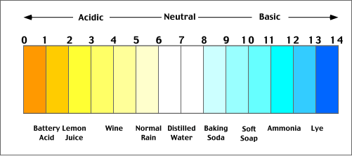

The pH scale is very useful in
determining the quality of water.
On the scale there is ACIDIC on the low end and BASIC on the high end.
A pH level of 6.5-7.5 is going to be suitable for most
organisms.
A score of 7 is ideal for most of life. If the scale goes up to 8+ or 6 and below, we can expect
the
water to be unfit for many living things.
If the level changes even one or two points away from neutral (7), plants and fish will
die.